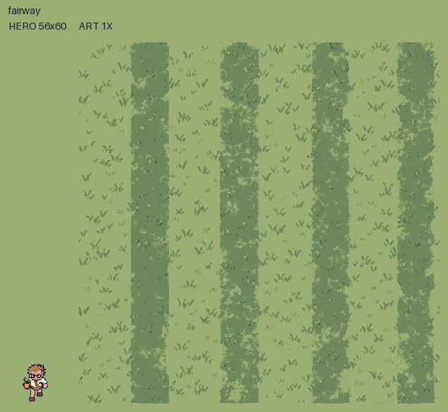
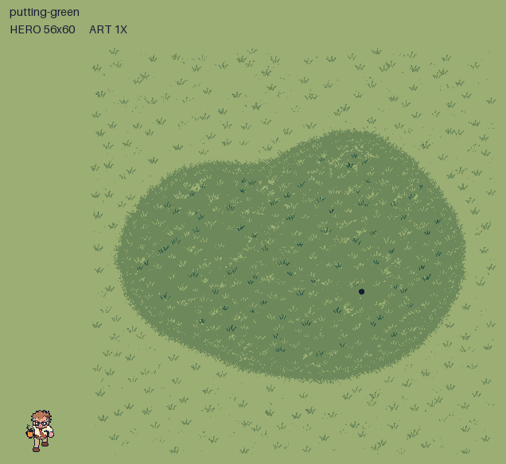
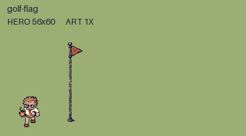
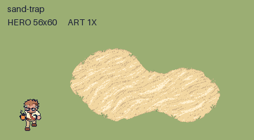
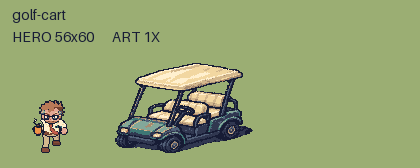
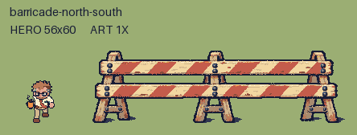

Maple Hollow Parkway extras
Six separate pieces for art approval. Nothing is placed in the game.
Every comparison shows native 1x art and the full unscaled 56×60 hero. Wide pieces scroll in their own frame; 2x details use crisp whole-number enlargement.
Manifest · Validation · Method and notes
Grass and orientation checks
Fairway between existing lawns at 1x · Lawn, fairway and putting green · Fairway 2×2 repeat
Green with independent flag · Front barricade across a north-south road
Grass uses warm #9BAE73 and #6D895B for broad surfaces. Deep green is restricted to tiny blade marks, never a broad blue-green stripe. The flag remains its own wall piece; the green has no solid footprint.
fairway
WALK-THROUGH · 512 × 512 · 2x working painting

Sprite PNG · Inspect at 2x · Footprint overlay
putting-green
WALK-THROUGH · 512 × 512 · 2x working painting

Sprite PNG · Inspect at 2x · Footprint overlay
golf-flag
WALL · 32 × 160 · 3x working painting

Sprite PNG · Inspect at 2x · Footprint overlay
sand-trap
WALK-THROUGH · 256 × 160 · 3x working painting

Sprite PNG · Inspect at 2x · Footprint overlay
golf-cart
WALL · 144 × 96 · 3x working painting

Sprite PNG · Inspect at 2x · Footprint overlay
barricade-north-south
WALL · 320 × 96 · 3x working painting

Sprite PNG · Inspect at 2x · Footprint overlay
Review overlays only: red rectangles are proposed solid footprints, cream shows the feet line, orange is the foot point. Runtime placement, collision and depth sorting wait for approval.